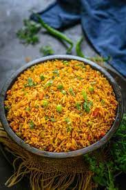

Tawa Pulao Recipe!

A popular and spicy street style pulao recipe made with long grain
rice and pav bhaji masala. It is a widely appreciated quick pulao recipe in india,
originated from the local mumbai streets. It is spicy and hence served with yoghurt
raita, but also tastes great just by itself.
Ingredients
- Onion
- Tomato
- Garlic
- Pavbhaji Masala
- Rice
Step-by-Step Process
- Stir fry the onion.
- Add tomatoes and capsicum and wait for 5-7 minutes till they are cooked.
- Add the Pavbhaji Masala.
- Add steamed rice and mix it properly.
- Garnish with lemon and coriander before serving.